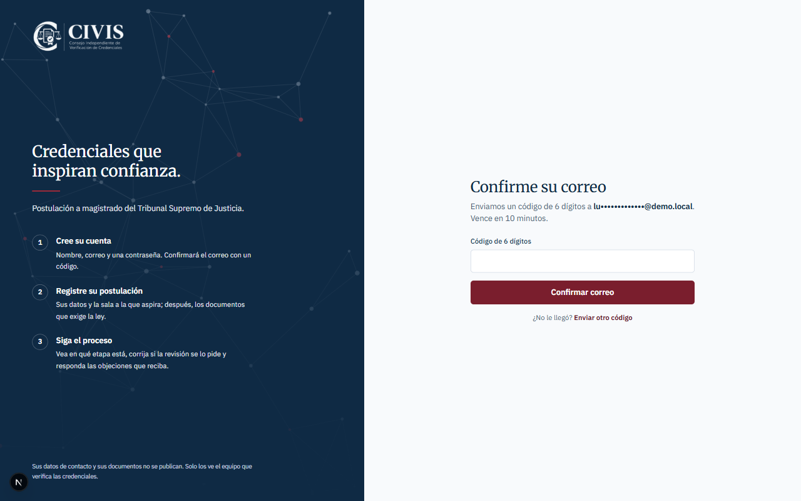
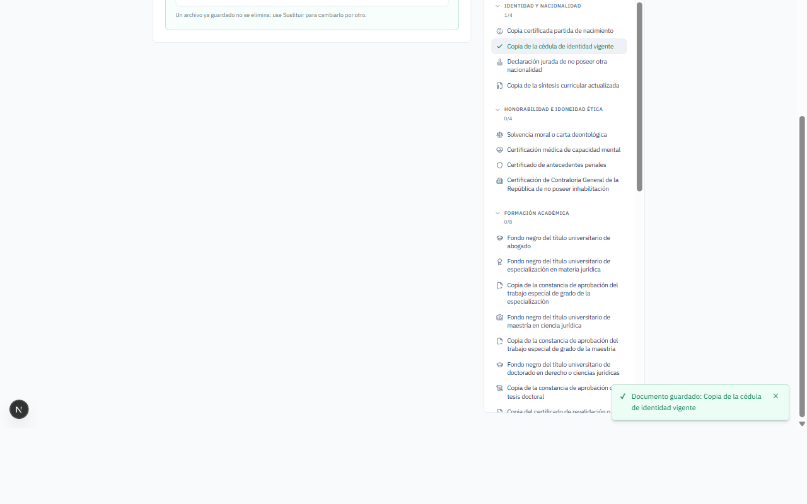
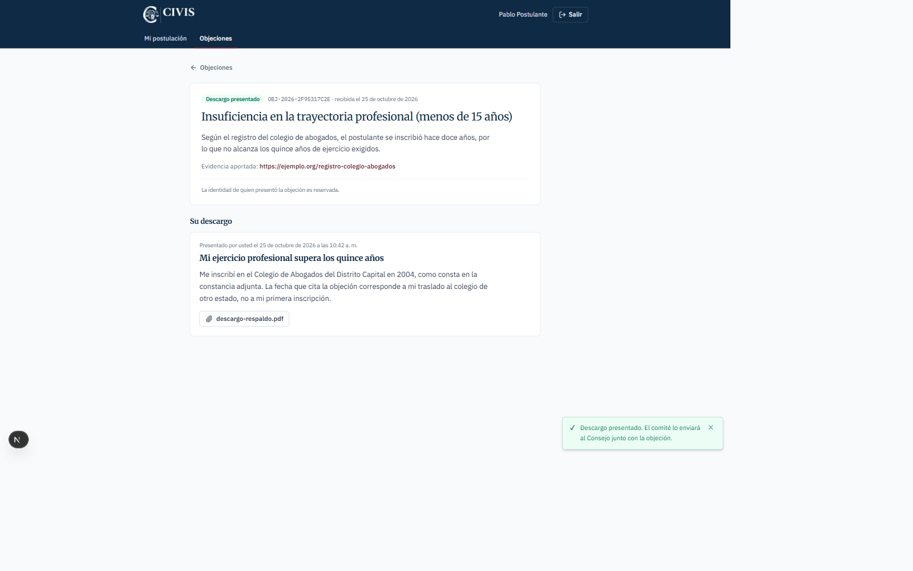
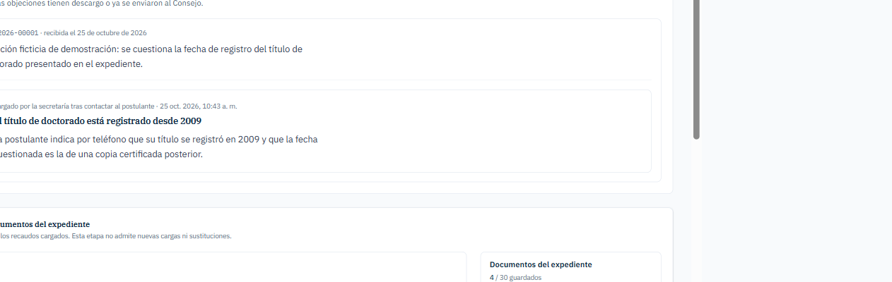
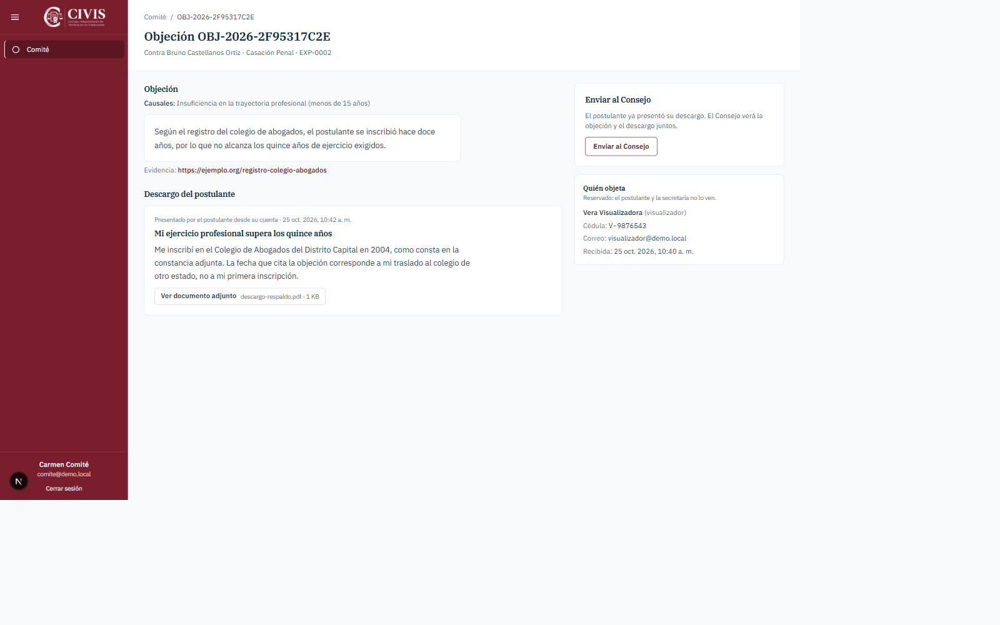
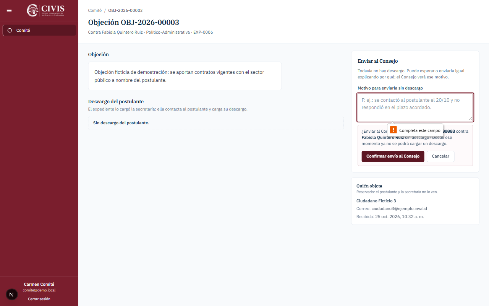
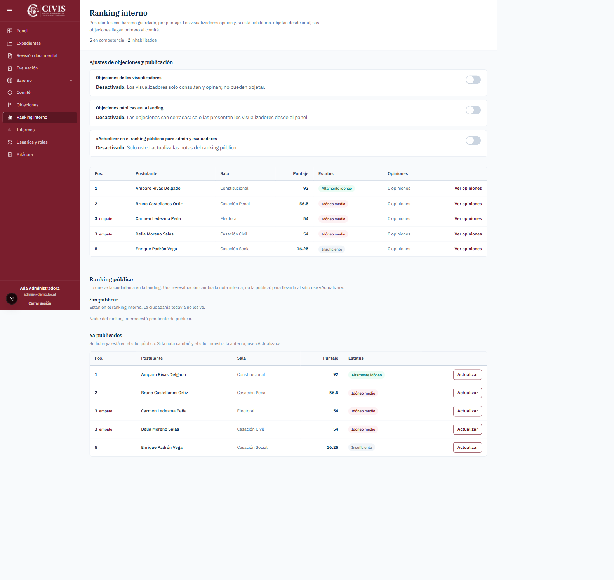
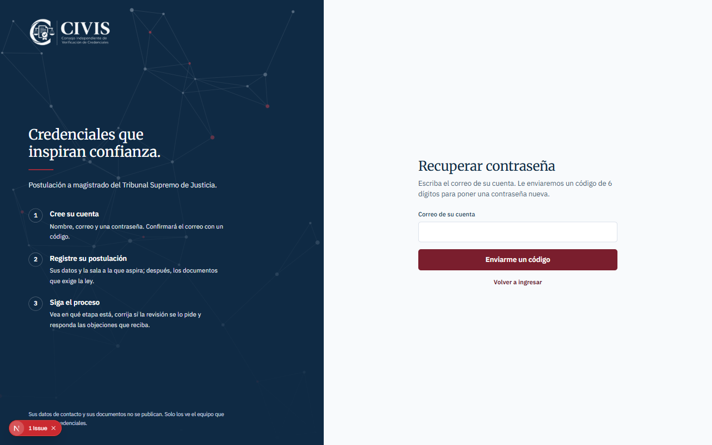

Cuentas de postulante, comité de objeciones, descargos y recuperación de contraseña
Portal del postulante · Panel interno (secretaría, revisión, comité, Consejo, visualizadores y administración)
Versión 2 · Octubre de 2026 · Capturas tomadas en un entorno de prueba con datos ficticios.
Contenido
Cómo funciona el proceso
Postulante: crear la cuenta y postularse
Postulante: corregir un expediente devuelto
Postulante: responder una objeción (descargo)
Revisión documental: devolver para corrección
Visualizador: presentar una objeción
Secretaría: cargar el descargo de un postulante sin cuenta
Comité: recibir objeciones y enviarlas al Consejo
Consejo (evaluadores): objeciones con descargo
Administración: interruptores y ranking público
Recuperar la contraseña (todos los usuarios)
Quién puede hacer qué
1. Cómo funciona el proceso
Hay dos puertas de entrada:
Portal del postulante: el aspirante crea su cuenta, registra su postulación, carga los documentos, sigue su etapa, corrige lo que le pidan y responde objeciones.
Panel interno: lo usa el personal del Consejo Independiente según su rol.
Recorrido de un expediente:
Carga de documentos (borrador). El postulante, o la secretaría si lo dio de alta ella, carga los recaudos.
Revisión documental. El revisor lo aprueba o lo devuelve para corrección con un motivo. Mientras está en borrador, el postulante y la secretaría pueden corregirlo.
Evaluación por el Consejo (los evaluadores activos) y ranking interno.
Objeciones. Si están habilitadas, los visualizadores objetan desde el ranking interno. La objeción llega primero al comité, que espera el descargo del postulante y la envía al Consejo. El Consejo la evalúa con el flujo de siempre (rondas, puntaje o inelegibilidad).
Confidencialidad. El postulante y la secretaría nunca ven quién presentó una objeción. Solo el comité y el Consejo ven esa identidad, y cada consulta queda registrada en la bitácora.
2. Postulante: crear la cuenta y postularse
Postulante Entre al portal de postulación y pulse «Créela aquí».
Escriba su nombre, apellido y correo, y una contraseña de al menos 12 caracteres con mayúscula, minúscula y un número. Pulse «Crear cuenta».
Le llega al correo un código de 6 dígitos que vence en 10 minutos. Escríbalo y pulse «Confirmar correo». Si no le llegó, use «Enviar otro código».
Ingrese con su correo y contraseña.
Crear la cuenta

Confirmar el correo con el código
Registrar la postulación
La primera vez verá «Registrar mi postulación». Complete la cédula, la sala a la que aspira y un teléfono venezolano. Su nombre ya viene de la cuenta.
Pulse «Registrar postulación». Se crea su expediente (por ejemplo, EXP-0009).
Datos de la postulación
Cargar los documentos y enviar a revisión
En el listado de la derecha, elija un documento, adjunte el PDF o la imagen y pulse «Guardar documento». Puede hacerlo en varias sesiones.
Cuando termine, pulse «Enviar a revisión» y confirme. No hace falta ningún código por correo: su sesión basta.
Arriba verá siempre la etapa actual. Mientras esté en revisión o evaluación no podrá cambiar datos ni documentos.

Documento guardado: queda marcado en el listadoExpediente enviado: etapa «En revisión documental»
3. Postulante: corregir un expediente devuelto
Si la revisión documental encuentra algo que corregir, le devuelve el expediente con un motivo. Le llega un correo y, al ingresar, verá el aviso «La revisión le pide corregir su expediente» con el motivo exacto.
Use «Corregir mis datos» si hay que cambiar nombre, sala o teléfono. La cédula no se puede cambiar.
Cargue o sustituya los documentos señalados.
Pulse «Reenviar a revisión» y confirme.
La secretaría también puede hacer estas correcciones desde el panel si usted se lo pide.
Expediente devuelto con el motivo de la revisiónEl portal también se usa desde el teléfono
4. Postulante: responder una objeción (descargo)
Si alguien objeta su postulación, le llega un correo y, en «Mi postulación», un aviso con el botón «Ver objeciones».
Aviso de objeciones recibidas
Abra la objeción. Verá las causales, la descripción de los hechos y la evidencia. No verá quién la presentó.
En «Presentar mi descargo», escriba un título y una descripción y, si quiere, adjunte un PDF o una imagen de respaldo.
Pulse «Revisar y presentar» y luego «Confirmar y presentar». El descargo no se puede modificar después.
Objeción y formulario de descargo

Descargo presentado
Plazo. Puede presentar el descargo mientras el comité no haya enviado la objeción al Consejo. Si el comité la envía sin descargo, la objeción mostrará «Ya no admite descargo».
5. Revisión documental: devolver para corrección
Revisor En «Revisión documental» abra el expediente. Si falta algo o algo está mal:
Pulse «Devolver para corrección».
Escriba el motivo (mínimo 10 caracteres). Lo verá la secretaría y, si tiene cuenta, el postulante, que además lo recibe por correo.
Pulse «Confirmar devolución».
Cola de revisión documentalMotivo de la devolución
6. Visualizador: presentar una objeción
Visualizador Solo puede objetar cuando la administración activa «Objeciones de los visualizadores». Si está apagado, el botón «Objetar» no aparece.
En «Ranking interno», pulse «Objetar» en la fila del postulante.
Escriba su cédula, marque las causales, describa los hechos (mínimo 50 caracteres) y pegue el enlace a las pruebas.
Pulse «Presentar objeción» y confirme. Recibirá el acuse con el PDF de la denuncia.
Formulario de objeción del visualizador
La objeción llega al comité. Por sí sola no cambia el puntaje.
7. Secretaría: cargar el descargo de un postulante sin cuenta
Secretaría Si el expediente lo dio de alta la secretaría y el postulante no tiene cuenta, en su ficha aparece «Objeciones y descargos» con el teléfono y el correo del postulante.
Contacte al postulante y léale la objeción. Tampoco aquí se ve quién la presentó.
Escriba el título y la descripción con lo que responde el postulante y, si hay, adjunte el documento.
Pulse «Cargar descargo» y confirme.
Objeción pendiente de descargo en el expediente

Descargo cargado por la secretaría
8. Comité: recibir objeciones y enviarlas al Consejo
Comité Toda objeción llega primero a «Comité», organizada en tres pestañas:
Esperando descargo: indica si lo presenta el postulante o lo carga la secretaría, y cuántos días lleva.
Con descargo: listas para enviar al Consejo.
Enviadas al Consejo.
Bandeja del comité
Pulse «Abrir». Verá la objeción, el descargo con su adjunto y, aparte, quién objeta.
Pulse «Enviar al Consejo» y confirme.
Sin descargo: puede esperar o enviarla igual. En ese caso el motivo es obligatorio y el Consejo lo verá junto a la objeción.

Objeción con descargo del postulante

Sin descargo, el motivo es obligatorio
9. Consejo (evaluadores): objeciones con descargo
EvaluadorAdministrador En «Objeciones» solo aparecen las objeciones que el comité ya envió. Las que siguen en el comité no se muestran.
En «Ajustar baremo» → «Ver objeciones» se lee cada objeción con su descargo y el documento adjunto, o el aviso «Sin descargo» con el motivo del comité.
La ronda de objeción, el puntaje y la inelegibilidad siguen igual que antes.
Los siete evaluadores activos ahora se llaman «Consejo» en todo el panel.
Bandeja del Consejo: solo lo enviado por el comitéEl Consejo ve la objeción y el descargo
10. Administración: interruptores y ranking público
En «Ranking interno», la sección «Ajustes de objeciones y publicación» reúne tres interruptores:
Interruptor
Quién lo cambia
Qué hace
Objeciones de los visualizadores
Superadministrador y administrador
Muestra «Objetar» a los visualizadores en el ranking interno.
Objeciones públicas en la landing
Superadministrador
Abre las objeciones a la ciudadanía desde el sitio público. Por ahora las objeciones son cerradas.
«Actualizar en el ranking público» para admin y evaluadores
Superadministrador
Permite a administradores y evaluadores llevar al sitio público la nota re-evaluada de un postulante ya publicado.

Interruptores y ranking público (vista del superadministrador)
Ranking público
Enviar al ranking público (sección «Sin publicar»): solo el superadministrador.
Actualizar (sección «Ya publicados»): el superadministrador siempre; el administrador y los evaluadores solo si el interruptor está activo. Una re-evaluación cambia la nota interna, no la pública: este botón la lleva al sitio.
Administrador actualizando una ficha publicada
11. Recuperar la contraseña (todos los usuarios)
Funciona igual en el portal del postulante y en el panel interno.
En la pantalla de ingreso, pulse «¿Olvidó su contraseña?».
Escriba el correo de su cuenta y pulse «Enviarme un código».
Escriba el código de 6 dígitos que le llegó, que vence en 10 minutos, y su contraseña nueva dos veces.
Pulse «Restablecer contraseña» e ingrese con la nueva.
Al restablecerla se cierran todas sus sesiones abiertas, se quita el bloqueo por intentos fallidos y le llega un correo de aviso. Si usted no lo pidió, restablézcala de nuevo y avise al equipo.
Panel: pedir el códigoPanel: código y contraseña nueva

Portal del postulante: recuperar contraseña
12. Quién puede hacer qué
Rol
Dónde entra
Qué hace
Postulante
Portal del postulante
Crear cuenta, postularse, cargar y corregir documentos, seguir su etapa y presentar descargos.
Secretaría
Panel
Crear expedientes, corregirlos en borrador y cargar descargos de postulantes sin cuenta.
Revisor
Panel
Revisión documental: enviar a evaluación o devolver para corrección.
Comité
Panel
Recibir objeciones y enviarlas al Consejo, con descargo o con motivo.
Evaluador (Consejo)
Panel
Evaluar, re-evaluar por objeción y, si está habilitado, actualizar el ranking público.
Visualizador
Panel
Consultar, opinar y, si está habilitado, objetar.
Administrador
Panel
Usuarios, interruptor de objeciones de visualizadores y escaladas; actualizar el ranking público si está habilitado.
Una cuenta de postulante no puede entrar al panel interno, y el personal no entra por el portal del postulante.